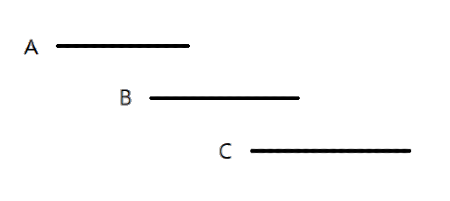

import java.util.ArrayList;
public class PenLift
{
int len, size;
boolean[] usedS, usedV;
int[] nv; // num of vertices
int[][] adj1, adj2;
ArrayList<Integer> xv, yv;
boolean contains(int x,int y) {
for (int i = 0; i < xv.size(); i++)
if (xv.get(i)==x && yv.get(i)==y)
return true;
return false;
}
int dfs(int i) {
usedS[i] = true;
int nov = 0;
for (int j = 0; j < xv.size(); j++) {
if (!usedV[j] && adj2[i][j]!=0 && nv[j]%2==1) {
nov++;
usedV[j] = true;
}
}
for (int j = 0; j < len; j++)
if (!usedS[j] && adj1[i][j]!=0)
nov += dfs(j);
return nov;
}
public int numTimes(String[] segments, int n){
len = segments.length;
usedS = new boolean[len];
adj1 = new int[len][len];
xv = new ArrayList<Integer>();
yv = new ArrayList<Integer>();
int[][] p = new int[len][4];
for (int i = 0; i < len; i++) {
String[] segment = segments[i].split(" ");
for (int j = 0; j < 4; j++)
p[i][j] = Integer.parseInt(segment[j]);
if (p[i][2]<p[i][0] || p[i][3]<p[i][1]) {
int a = p[i][0], b = p[i][1];
p[i][0] = p[i][2]; p[i][1] = p[i][3];
p[i][2] = a; p[i][3] = b;
}
}
// merging overapping segments
for (int i = 0; i < len; i++) {
if (usedS[i]) continue;
int a = -1, b = -1, c = -1, d = -1;
if (p[i][1]==p[i][3]) {a = 0; b = 2; c = 1; d = 3;}
else if (p[i][0]==p[i][2]) {a = 1; b = 3; c = 0; d = 2;}
boolean flag = true;
while (flag) {
flag = false;
for (int j = i+1; j < len; j++) {
if (usedS[j]) continue;
if (p[i][c]==p[j][c] && p[j][c]==p[j][d]) {
if (p[j][a]<=p[i][a] && p[i][a]<p[j][b]) {
p[i][a] = p[j][a];
if (p[i][b]<p[j][b]) p[i][b] = p[j][b];
usedS[j] = true;
flag = true;
}
else if (p[i][a]<=p[j][a] && p[j][a]<p[i][b]) {
if (p[i][b]<p[j][b]) p[i][b] = p[j][b];
usedS[j] = true;
flag = true;
}
}
}
}
}
// connecting adjacent segments and adding crossing vertices
for (int i = 0; i < len; i++) {
if (usedS[i]) continue;
for (int j = i+1; j < len; j++) {
if (usedS[j]) continue;
if (p[i][0]==p[j][0] && p[i][1]==p[j][1] || p[i][0]==p[j][2] && p[i][1]==p[j][3] ||
p[i][2]==p[j][0] && p[i][3]==p[j][1] || p[i][2]==p[j][2] && p[i][3]==p[j][3]) {
adj1[i][j]++; adj1[j][i]++;
}
else if (p[i][0]<=p[j][0] && p[j][0]<=p[i][2] && p[j][1]<=p[i][1] && p[i][1]<=p[j][3]) {
xv.add(p[j][0]); yv.add(p[i][1]);
adj1[i][j]++; adj1[j][i]++;
}
else if (p[j][0]<=p[i][0] && p[i][0]<=p[j][2] && p[i][1]<=p[j][1] && p[j][1]<=p[i][3]) {
xv.add(p[i][0]); yv.add(p[j][1]);
adj1[i][j]++; adj1[j][i]++;
}
}
}
// adding all of the vertices
for (int i = 0; i < len; i++) {
if (usedS[i]) continue;
if (!contains(p[i][0],p[i][1])) {xv.add(p[i][0]); yv.add(p[i][1]);}
if (!contains(p[i][2],p[i][3])) {xv.add(p[i][2]); yv.add(p[i][3]);}
}
nv = new int[xv.size()];
adj2 = new int[len][xv.size()];
// connecting vertices into segments
for (int a = 0; a < xv.size(); a++) {
int x = xv.get(a);
int y = yv.get(a);
for (int i = 0; i < len; i++) {
if (usedS[i]) continue;
if ((x==p[i][0] && y==p[i][1]) || (x==p[i][2] && y==p[i][3])) {
nv[a]++;
adj2[i][a]++;
}
else if (p[i][1]==p[i][3] && (p[i][0]<x && x<p[i][2] && y==p[i][1])) {
nv[a] += 2;
adj2[i][a]++;
}
else if (p[i][0] == p[i][2] && (p[i][1]<y && y<p[i][3] && x==p[i][0])) {
nv[a] += 2;
adj2[i][a]++;
}
}
}
usedV = new boolean[xv.size()];
int min = 0;
// Searching the number of odd vertices in each component
for (int i = 0; i < len; i++) {
if (usedS[i]) continue;
usedS[i] = true;
int nov = 0; // number of odd vertices
for (int j = 0; j < xv.size(); j++) {
if (!usedV[j] && adj2[i][j]!=0 && nv[j]%2==1) {
nov++;
usedV[j] = true;
}
}
for (int j = 0; j < len; j++)
if (!usedS[j] && adj1[i][j]!=0)
nov += dfs(j);
if (n%2 == 0) nov = 0;
min += (nov == 0) ? 1 : nov/2;
}
return min - 1;
}
}
Problem
손을 떼는 횟수를 최소화하여 주어진 선분들을 따라가는 방법을 찾는 문제이다.
Explanation
오일러 경로 (Eulerian path): 그래프의 모든 변을 한 번씩 거치는 경로.
오일러 경로를 활용한 문제이다. 홀수 차수(연결된 선분의 개수)를 가진 점의 개수가 짝수로 주어져야 모든 선분을 따라갈 수 있다. 홀수 차수인 점이 2개씩 나올 때마다 손을 떼어야 하므로 nov/2이다.
- 선분의 점이 오름차순이 되도록 각 선분을 정렬한다.
- 겹쳐진 선분을 하나의 선분으로 통합한다.
- 같은 점을 가진 선분을 연결한다. 교차된 선분을 연결하고 교차점을 xv,yv에 더한다. (adj1에 표시)
- 선분의 양쪽 점을 중복없이 xv, yv에 더한다.
- 선분에 있는 모든 점을 해당 선분과 연결하고 (adj2에 표시), 점에 연결된 선분의 개수(일반점 1개, 교차점 2개)를 증가시킨다.
- 깊이 우선 탐색(dfs)을 이용해 연결된 선분을 찾고, 해당 선분에서 홀수 차수를 가진 점들의 개수를 nov에 더한다. 선분 또는 점이 사용되면 used배열을 이용해 사용되었다는 표시를 한다.
- n이 홀수이면 nov/2를 min에 더한다. n이 짝수이면 구성 요소(component)의 선분들을 한 번에 따라갈 수 있으므로 min에 1을 더한다.
그림 1 교차점을 가진 선분들의 모든 형태.

그림 2 (구분을 쉽게 하기 위해 A,B,C 선분을 각각 떨어뜨려 놓았다. 선분이 동일 선상에 있다고 가정한다.) A와 B는 서로 겹쳐진다. A와 C는 동일한 y값을 가지지만 겹쳐지진 않는다. A와 B를 겹친 후에 C를 겹쳐야 한다. 세로 선분의 경우 가로 선분과 마찬가지라 생략한다.
References
오일러 경로